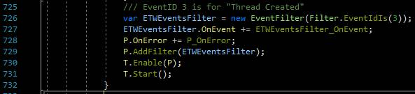
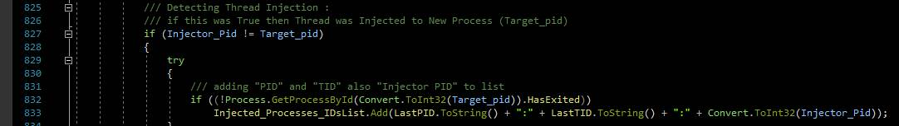
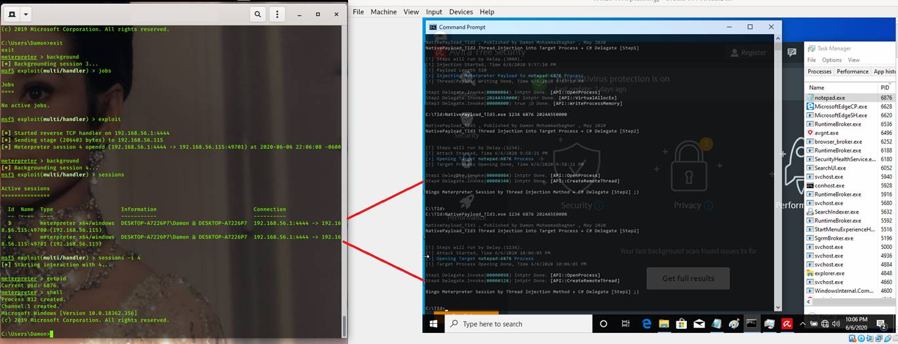

Detecting Thread Injection by ETW & One Simple Technique (Chunking codes to two parts
Detecting Thread Injection by ETW &
One Simple Technique (Chunking codes to two parts)
In this Article I want to talk about ETW and
Thread Injection in this case “Remote Thread Injection”.
I made simple C# code “ETWMonThread.cs” for Meterpreter Payload/Thread Injection Monitoring in 2018.
this code was simple & my goal was to Show how We can
use ETW very simple and useful…
in this code we have something like this :

Picture 1: ETWEventsFilters
with ID 3.
With This code you can have all New Created
Thread IDs (TIDs) with ETW then you need to get only
Injected Thread which means Thread Created by Process A into Process B so with
this simple Code you can get this:

Picture 2: Detecting Injector PID.
it seams everything is ok & I tested this code with
some Technique like these:
ETW
test with Process Hollowing Technique:
As you can see in this picture we have shell
but this Meterpreter session and Thread ID Detected
by ETW.
Thread Injection Detected & you can see
Session Closed… … (click on Picture for better resolution)
Picture 3: Process & TID Detected by ETW
(Process Hollowing Technique).
ETW
test with APC Queue Technique:
Again you can see in this picture we have
shell but this Meterpreter session and Thread ID Detected
by ETW .
Thread Injection Detected & you can see
Session Closed… (click on Picture for better resolution)
Picture 4: Process & TID Detected by ETW
(APC-Q Technique).
After these tests you can see this code “ETWMonThread.cs” was worked good.
but something in these Tests was same which is all of
them have OpenProcess, CreateRemoteThread,
WriteProcessMemory & … in one code/exe
it means Malware/Injector
Code Will Detect at least with PID by ETW Events.
In the Picture 3 Malware/Injector
Code PID was “Process Exited:1048”.
In the Picture 4 Malware/Injector
Code PID was “Process Exited:3964”
Chunking Codes:
In this simple technique I want to use Thread
Injection method with two Steps, it means I want to run this Injection
Technique with two code/exe file.
As you can see I made “NativePayload_TId2.exe”
and this is Step1 of Thread Injection Method/Code.
In this step1 we have (OpenProcess, VirtualAllocEx, WriteProcessMemory)
API functions only and don’t have CreateRemoteThread Function.
(click on Picture for better resolution)
Picture 5: “NativePayload_TId2” Payload
Injection into Target Process Without CreateRemoteThread.
Important
Point :
As you can see in the “Picture 5“, we “don’t
have any Detection” for Payload Injection or Writing Payload via API Function WriteProcessMemory
into Target Process
(Notepad.exe:3796) by ETW code because in
this [step1] with “NativePayload_TId2.exe” we did not have CreateRemoteThread Function.
So with this “NativePayload_TId2.exe” we don’t
have new Thread but Target Process Infected by This Code very Simple & Malware Payload was injected to Notepad (In-memory).
In the Next Picture you can see I used “NativePayload_TId3.exe”
which is Part2 of Attack/Code.
In this step2 of code Target Process in this
case “Notepad” Opened with API function OpenProcess & Remote Thread created by “Intptr Pointer Address” from Step1
Which is in this case “002B0000”.
(click on Picture
for better resolution)
Picture 6: “NativePayload_TId3” Creating Remote Thread.
Now in this Step2, Code Detected by ETW and you
can see “NativePayload_TId3.exe” as Thread Injector Detected by ETW but this is
Part2 of Code,
This is not all of them.
Part1 of code which was (OpenProcess, VirtualAllocEx, WriteProcessMemory)
executed by “NativePayload_TId2.exe” and Not Detected by ETW code and still is undetectable
for this C# ETW code.
In the next “Picture 7” you can see this Session
Detected/Closed.
(click on Picture
for better resolution)
 Picture 7: “NativePayload_TId3” Creating Remote Thread.
Picture 7: “NativePayload_TId3” Creating Remote Thread.
Another important thing is in this technique
after [step1], your payload is in-memory of Notepad Process and you can Execute that any time you want with/without delay
And more than once so in the next Pictures
you can see I used this Technique for Bypassing AVIRA Anti-viruses and these
Codes [step1 & step2] worked very well
but in this case I Used [step2] two times and I had two
session too, very simple.
Picture 8: this simple method
not detected by AVIRA.
 Picture 9: this simple method
not detected by AVIRA.
ETWMonThread.cs: https://github.com/DamonMohammadbagher/Meterpreter_Payload_Detection/tree/master/MPD/ETWMonThread/
Video ETWMonThread.cs
[step by step]: https://www.youtube.com/watch?v=nIoDrqeQ2es
as you can see this ETW is very useful thing for Thread
Monitoring also is useful to show Injected Threads also Injector Processes... (Sometimes) and I think Some
Anti-viruses need to use this ETW or something like this but always attackers
have some Methods for bypassing your things….